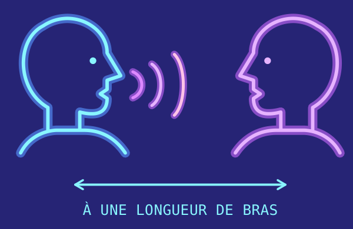
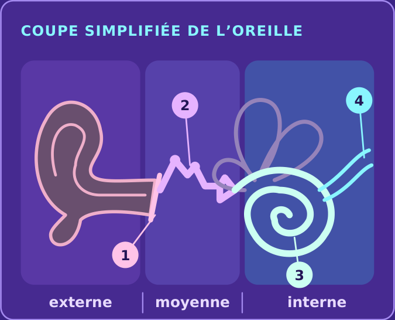
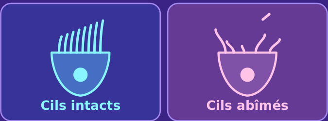
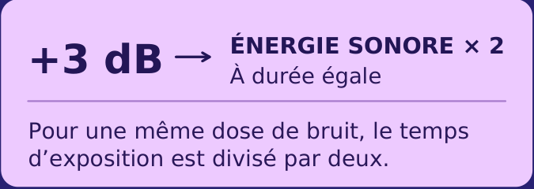
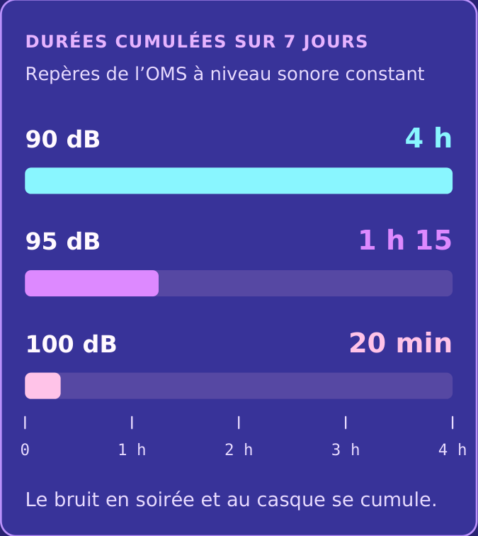
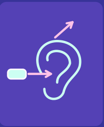
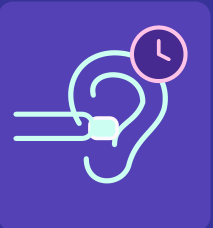
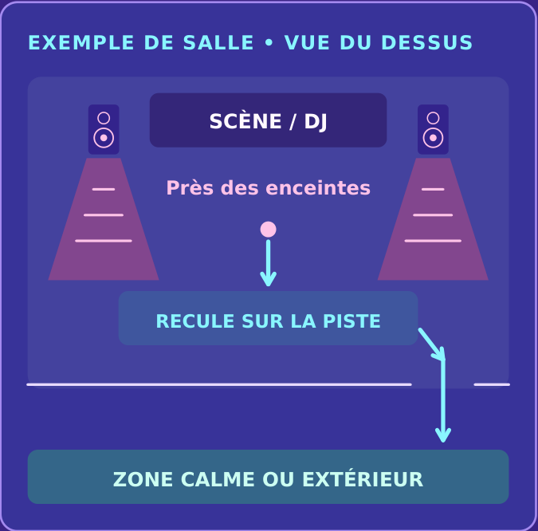
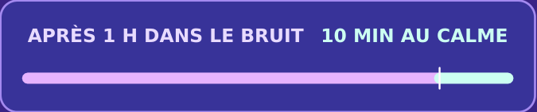

Agir sur le niveau
Quand tu peux agir sur le volume, commence par le diminuer. Dans un lieu sonorisé, cherche un emplacement moins exposé. Pour les outils et les machines, privilégie un modèle moins bruyant si tu as le choix.
Concert, écouteurs, transports, bricolage… Le bruit s’accumule. Comprendre son audition, c’est pouvoir profiter de tous ces moments plus longtemps.

Le plaisir d’écouter ne permet pas de juger le danger. Une musique appréciée peut léser l’audition comme un bruit désagréable.
Quand tu peux agir sur le volume, commence par le diminuer. Dans un lieu sonorisé, cherche un emplacement moins exposé. Pour les outils et les machines, privilégie un modèle moins bruyant si tu as le choix.
Le temps passé dans le bruit compte aussi. Réduis la durée totale et prévois des interruptions dans un endroit calme. Ces pauses évitent une exposition supplémentaire, sans effacer celle qui a déjà eu lieu.
Une protection doit convenir à l’activité et être correctement ajustée. Porte-la aux deux oreilles pendant toute la période bruyante : son efficacité dépend aussi de la façon dont elle est utilisée.
Pour approfondir : OMS · INRS, prévention
Entendre mobilise une chaîne mécanique, sensorielle et nerveuse. Le tympan n’est qu’une étape : l’oreille interne peut être abîmée sans perforation de cette membrane.
Oreille externe : recueillir et guiderLe pavillon capte les sons. Le conduit auditif les dirige vers le tympan, une membrane qui vibre avec les variations de pression de l’air.
Oreille moyenne : transmettre les vibrationsLe marteau, l’enclume et l’étrier forment la chaîne des osselets. Ils transmettent le mouvement vers l’oreille interne. La trompe d’Eustache participe à l’équilibrage de la pression.
Cochlée : transformer le signalCette structure remplie de liquide abrite les cellules ciliées. La déformation de leurs structures sensorielles participe à la transduction mécano-électrique : la vibration devient un signal électrique.
Nerf auditif et cerveau : interpréterLe message nerveux rejoint les voies auditives puis le cortex auditif. Le cerveau donne un sens à ce qui est entendu : parole, musique, signal d’alerte.
Audition et équilibre : deux fonctions proches. Dans l’oreille interne, la cochlée est dédiée à l’audition, tandis que le vestibule participe à l’équilibre.


Références : INRS, anatomie et audition · Assurance Maladie
Une exposition dépend du niveau, du temps et de la répétition. La fréquence du son et les caractéristiques de l’impulsion comptent aussi.

Pour conserver approximativement la même dose sonore, une hausse de 3 dB conduit à diviser la durée par deux. C’est une relation énergétique, pas une garantie d’innocuité individuelle.
Moyenne ≠ crête. Le niveau continu équivalent LAeq,T résume l’énergie reçue pendant une durée T. Le niveau de crête LCpeak décrit un pic bref. Une détonation peut être dangereuse même si elle dure très peu.
Références : INRS, définitions · INRS, réglementation
Les repères de l’OMS ci-dessous concernent une exposition à niveau constant, cumulée sur sept jours. Ils aident à réduire le risque ; ils ne constituent pas une durée « sans danger » garantie pour chaque personne.
| Niveau constant | Durée cumulée indicative |
|---|---|
| 80 dB | 40 h |
| 85 dB | 12 h 30 |
| 90 dB | 4 h |
| 95 dB | 1 h 15 |
| 100 dB | 20 min |
| 105 dB | 8 min |
| 110 dB | 2 min 30 |
Les petites barres sont un repère visuel ordonné, non une échelle linéaire des durées.

Enfants : une référence plus protectrice. La norme OMS–UIT prévoit, pour les appareils d’écoute, une référence de 75 dB pendant 40 heures par semaine en mode enfant, contre 80 dB pendant 40 heures en mode adulte. Ce cadre de dosimétrie n’est pas une limite réglementaire de salle de concert.
Ajoute des expositions hypothétiques à niveau constant. Le calcul additionne leur part du repère hebdomadaire du tableau OMS. Il ne mesure ni ton environnement, ni ton audition, ni ton risque médical individuel.
Un cumul à surveiller
60 min à 90 dB représentent 25 % du repère de 4 h.
Références : OMS, tableau d’écoute · Norme OMS–UIT
L’efficacité réelle dépend de la forme, de la taille, de l’étanchéité et du port continu. La valeur d’atténuation indiquée sur l’emballage ne décrit pas exactement ce que chaque personne obtiendra.
| Protection | Intérêt | Point d’attention |
|---|---|---|
| Bouchons en mousse | Disponibles et adaptables par compression. | Pose soignée, mains propres et déploiement complet. Respecter l’usage et le remplacement prévus par la notice. |
| Bouchons prémoulés filtrants | Réutilisables selon le modèle ; certains préservent mieux l’équilibre spectral. | La taille et l’étanchéité doivent convenir. Nettoyer selon les instructions. |
| Protections sur mesure | Adaptées au conduit, avec différents filtres selon l’usage. | Faire vérifier l’ajustement. Elles ne dispensent pas de limiter niveau et durée. |
| Serre-tête antibruit | Protection externe utile pour certains travaux et activités. | Vérifier le contact des coussinets et la compatibilité avec lunettes, casque et autres équipements. |
Le bouchon se met plus facilement en place lorsqu’il est encore comprimé. Manipule-le avec des mains propres et roule la mousse pour lui donner une forme fine et régulière.

Pour faciliter la pose, utilise la main opposée pour tirer doucement le haut de l’oreille vers le haut et l’arrière. Respecte les indications de la notice et n’insère jamais le bouchon en forçant.

Maintiens le bouchon du bout du doigt pendant que la mousse reprend sa forme. Le délai dépend du modèle et se situe souvent autour de 30 secondes. Procède de la même façon pour l’autre oreille.
À retenir : installe les protections avant l’exposition et garde-les jusqu’au retour dans un endroit calme. Même de courts retraits réduisent la protection obtenue sur l’ensemble de la période.
Références : Santé publique France · INRS, protecteurs individuels


Prépare des protections qui te conviennent et prévois combien de temps tu comptes rester. Sur place, l’équipe peut t’indiquer où obtenir des bouchons et quels espaces permettent de s’éloigner du bruit.
Évite de rester juste devant les enceintes et cherche une zone moins bruyante, tout en gardant tes protections. Dans une salle fermée, les murs renvoient une partie du son : quelques mètres de recul ne permettent donc pas de calculer à eux seuls la baisse du niveau sonore.
L’OMS conseille 10 minutes au calme après chaque heure dans le bruit. L’Assurance Maladie propose notamment 30 minutes toutes les deux heures ou 10 minutes toutes les 45 minutes. Ces conseils pratiques ne sont pas des équivalences mathématiques : prévois des pauses fréquentes et réduis l’exposition totale.
Après une sortie bruyante, prévois un moment plus calme au lieu de remettre aussitôt un casque à fort volume. Des sons étouffés, des bourdonnements ou une conversation devenue difficile sont des signes à prendre au sérieux, même en l’absence de douleur.
Références : OMS · Assurance Maladie · Standard OMS pour les lieux festifs
Un réglage identique ne produit pas le même niveau avec tous les appareils, tous les casques et tous les enregistrements. La durée d’écoute compte autant que le volume affiché.
Choisis une bonne adaptation à l’oreille et une isolation suffisante. La réduction active du bruit peut aider dans les transports à écouter moins fort.
Utilise, si ton appareil le propose, les estimations de niveau d’écoute, les alertes de dose et les limites de volume. Leur précision dépend du matériel et de sa compatibilité.
Alterner écoute et repos réduit le temps d’exposition. Pense au cumul avec les répétitions, les concerts, les outils bruyants ou une longue session de jeu.
Le repère « 60 % » a une limite. L’OMS le propose comme conseil simple, mais ce pourcentage n’assure pas un niveau acoustique déterminé. Le suivi de la dose d’écoute apporte une information plus utile qu’un curseur isolé.
Réduction active ≠ certification de protection. Un casque audio grand public à réduction de bruit n’est pas automatiquement un protecteur auditif adapté aux machines, aux outils ou aux détonations. Pour ces situations, choisis un équipement conçu et certifié pour la protection contre le bruit.
Références : OMS · Norme OMS–UIT · INRS, choix d’un protecteur
La disparition d’un symptôme après du repos ne prouve pas que toutes les expositions précédentes étaient sans conséquence.
Sifflement, bourdonnement ou autre perception sonore sans source extérieure correspondante. Ils peuvent être intermittents ou continus, dans une oreille ou dans les deux.
Diminution de l’audition : paroles moins nettes, sons assourdis, difficulté à suivre une conversation, surtout dans le bruit. Elle peut avoir plusieurs causes.
Sensibilité excessive ou pénible à des sons ordinaires. Un professionnel peut en évaluer les causes et proposer une prise en charge adaptée.
Références : Assurance Maladie, acouphènes · Perte auditive
Une surdité de transmission concerne l’oreille externe ou moyenne : le son se transmet moins bien, par exemple en présence de certaines otites ou d’un bouchon de cérumen.
Une surdité de perception touche l’oreille interne ou les voies auditives. Certaines atteintes liées au bruit sont irréversibles. Les symptômes seuls ne suffisent pas à distinguer les mécanismes.
Le médecin examine l’oreille, notamment par otoscopie. L’audiométrie tonale recherche les seuils d’audition selon la fréquence ; l’audiométrie vocale évalue la compréhension de la parole. Un test en ligne non étalonné ne remplace pas ce bilan.
Évite l’autodiagnostic. Une sensation d’oreille bouchée n’est pas forcément un simple bouchon de cérumen. Si elle s’accompagne d’une baisse brutale de l’audition, applique la conduite d’urgence ci-dessous.
Si tu entends beaucoup moins bien d’un coup, même d’une seule oreille, demande un avis ORL urgent. Si ce n’est pas possible, rends-toi aux urgences hospitalières. N’attends pas une nuit ou 24 heures pour voir si cela passe.
Signale l’heure de début et les symptômes associés : acouphènes, vertiges, douleur, sensation d’oreille bouchée, fièvre ou écoulement. Après un bruit intense, une gêne auditive persistante nécessite également un avis médical rapide.
Si la personne ne peut pas se déplacer, présente un traumatisme grave ou des signes de gravité, contacte le 15 ou le 112.
Perceuse, scie, tondeuse : réduis le bruit à la source, limite le temps de fonctionnement, éloigne les personnes non concernées et utilise une protection adaptée à la tâche.
La dose d’une répétition s’ajoute à celle des autres activités. Travaille l’aménagement du local, l’organisation des séances et le choix de filtres appropriés avec les personnes qui t’encadrent.
Une explosion ou une forte détonation peut entraîner une lésion immédiate. Ne compte pas sur sa brièveté pour te protéger. Respecte les distances et consignes propres à l’activité.
Le cérumen protège le conduit auditif. Nettoie doucement le pavillon et l’entrée de l’oreille, sans introduire de coton-tige ni d’objet dans le conduit. Les bougies auriculaires sont déconseillées.
En cas de douleur, d’écoulement ou de suspicion de tympan perforé, demande un avis avant tout produit introduit dans l’oreille. Certains médicaments peuvent être ototoxiques : parle de tes symptômes au médecin ou au pharmacien, sans interrompre seul un traitement prescrit.
Références : Assurance Maladie, cérumen · Causes de perte auditive
Les seuils ci-dessous concernent l’exposition professionnelle quotidienne normalisée sur huit heures, LEX,8h, et les crêtes. Ils ne sont pas des recommandations d’écoute de loisir.
| Repère | LEX,8h | Crête |
|---|---|---|
| Action inférieure | 80 dB(A) | 135 dB(C) |
| Action supérieure | 85 dB(A) | 137 dB(C) |
| Limite | 87 dB(A) | 140 dB(C) |
La limite tient compte de l’atténuation des protections ; les seuils d’action sont évalués sans cette atténuation. L’employeur doit organiser la prévention, en privilégiant les mesures collectives.
Référence : INRS, réglementation
Pour les lieux et activités entrant dans le champ de l’article R1336-1 du Code de la santé publique, les plafonds sont de 102 dB(A) et 118 dB(C), en niveaux continus équivalents sur quinze minutes. Les activités spécifiquement destinées aux enfants jusqu’à six ans révolus ont des plafonds de 94 et 104 dB. Ces limites d’organisation ne garantissent pas l’absence de risque pour chaque spectateur. Le standard international de l’OMS pour les lieux festifs recommande un maximum de 100 dB LAeq,15min.
Le risque de lésion peut exister avant la douleur. Un son fort peut être apprécié et rester dangereux. L’absence de douleur ne remplace ni l’estimation de l’exposition, ni les mesures de prévention.
Une sensation d’habituation ne prouve pas une résistance accrue de l’oreille. Une perte progressive peut passer inaperçue, jusqu’à rendre les conversations difficiles.
Certains filtres à atténuation uniforme cherchent à conserver un meilleur équilibre entre graves, médiums et aigus. Le choix et la pose restent essentiels. Un professionnel peut aider à trouver une protection adaptée à la pratique musicale.
Le microphone, son étalonnage, la position du téléphone et les limites de mesure influencent le résultat. Une application peut donner un repère, mais ne certifie pas la sécurité d’un lieu et ne remplace pas une mesure acoustique professionnelle.
Le repos est utile, mais ne restaure pas des cellules détruites et ne remet pas une exposition passée à zéro. En présence d’une baisse brutale de l’audition, on consulte en urgence au lieu d’attendre le lendemain.
Références : OMS · INRS · Assurance Maladie
Des termes utiles pour comprendre les conseils et décrire une gêne à un professionnel.
Références : INRS · Assurance Maladie · Acouphènes
Informations vérifiées le 13 novembre 2026. Les repères et les textes réglementaires correspondent à des contextes différents : écoute personnelle, lieux festifs et exposition professionnelle.